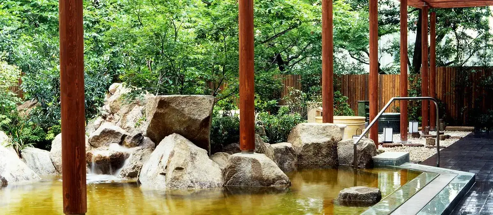
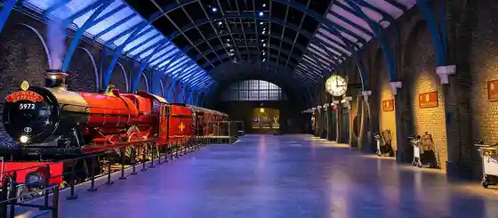

Nerima, Tokyo: things to do, food and stays
Nerima · Tokyo
Nerima
Highlighted on the Tokyo map.

Sights
Bade to Tennen Onsen Toyoshima Sono Niwa Baths
Wana Burazasu Sutajio Tour Tokyo – Meikingu Obu Harii Potta

Chihiro Art Museum Tokyo
Rikujo Jieitai Koho Center Rikkun Land
Shakujii Park
Nerima Tateishi Kami I Koen Furusato Bunka Kan
Oizumi Central Park
Kamen Raida 1 Go (Kamen Raida) Dezainmanhoru
Makino Memorial Garden
Musashi-Seki Park Fujimi Pond
Tagara Umebayashi Park
Nerima Art Museum
Toei Animeshon Museum
Oizumi Anime Gate
Dining
Parlor Ekoda
パーラー江古田

Cafe in Nerima, Tokyo.
Blondir
ブロンディール

Sweets and bakery shop in Nerima, Tokyo.
Golden time
麺や金時

Noodle restaurant in Nerima, Tokyo.
Chuka Soba Benten
中華そば べんてん

Noodle restaurant in Nerima, Tokyo.
Chonan Hosono Takashi
長男、ほそのたかし

Noodle restaurant in Nerima, Tokyo.
Machi no Parlor
まちのパーラー

Cafe in Nerima, Tokyo.
ARCACHON Honten
アルカション 本店

Cafe in Nerima, Tokyo.
RAMEN GOTTSU

Noodle restaurant in Nerima, Tokyo.
Men Sake Yamano
麺 酒 やまの

Noodle restaurant in Nerima, Tokyo.
PIZZERIA GTALIA DA FILIPPO
ピッツェリア ジターリア ダ フィリッポ

European restaurant in Nerima, Tokyo.
Teuchi Udon Hasegawa
手打うどん長谷川

Noodle restaurant in Nerima, Tokyo.
BIRI BIRI CRUSH MEN

Noodle restaurant in Nerima, Tokyo.
Awabi-tei
あわび亭

Seafood restaurant in Nerima, Tokyo.
Mishima
美志満

Noodle restaurant in Nerima, Tokyo.
Men Tei Ei
麺亭 英

Noodle restaurant in Nerima, Tokyo.
Yokohama Tonkotsu Shoyu Ramen YOLO
横浜豚骨醤油ラーメンYOLO

Noodle restaurant in Nerima, Tokyo.
Ito Chuka Soba
伊東中華そば

Noodle restaurant in Nerima, Tokyo.
Yakiniku Donya Gyuzo
焼肉問屋 牛蔵

Meat restaurant in Nerima, Tokyo.
Gen-soba Nonaka
玄蕎麦 野中

Noodle restaurant in Nerima, Tokyo.
Mendokoro Maruyoshi Shoten
麺処 まるよし商店

Noodle restaurant in Nerima, Tokyo.
Yoshoku Miura Tei
洋食 三浦亭

Meat restaurant in Nerima, Tokyo.
Shakujii Tora
石神井 とら

Noodle restaurant in Nerima, Tokyo.
Yahman
ラハメン ヤマン

Noodle restaurant in Nerima, Tokyo.
Ramenya John
ラーメン屋ジョン

Noodle restaurant in Nerima, Tokyo.
Musashino Enza
むさしの エン座

Noodle restaurant in Nerima, Tokyo.
Koisaimen Inosho
濃菜麺 井の庄

Noodle restaurant in Nerima, Tokyo.
Shotaro Udon
正太郎うどん

Noodle restaurant in Nerima, Tokyo.
Ekoda Horumon
江古田ホルモン

Meat restaurant in Nerima, Tokyo.
Soba Kiri Suzuki
そばきり すゞ木

Noodle restaurant in Nerima, Tokyo.
Ramen Ichiban
ラーメン一番

Noodle restaurant in Nerima, Tokyo.
Chuka Soba Masuda
中華そば ます田

Noodle restaurant in Nerima, Tokyo.
Naniwa
浪花

Japanese restaurant in Nerima, Tokyo.
ARCACHON Nerima ten
アルカション 練馬店

Sweets and bakery shop in Nerima, Tokyo.
Ramen Igossou
らーめん いごっそう

Noodle restaurant in Nerima, Tokyo.
BUTCHER'S TABLE Ooizumi gakuen ten
ブッチャーズテーブル 大泉学園店

Izakaya or bar in Nerima, Tokyo.
Hoya Taishoken
保谷 大勝軒

Noodle restaurant in Nerima, Tokyo.